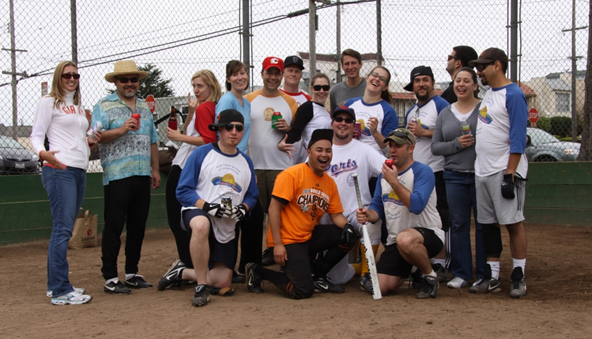
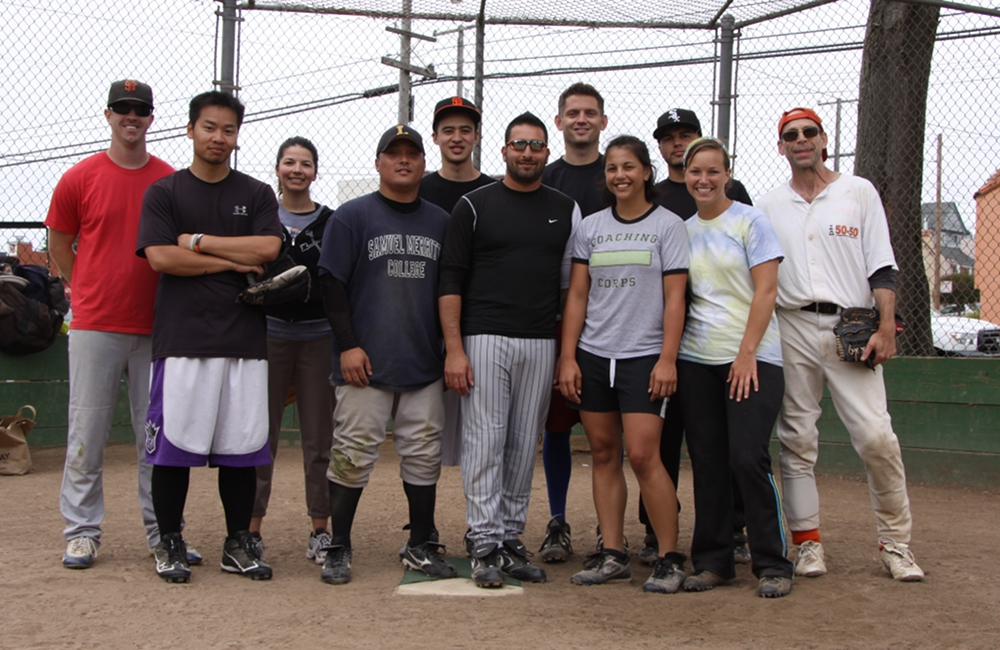
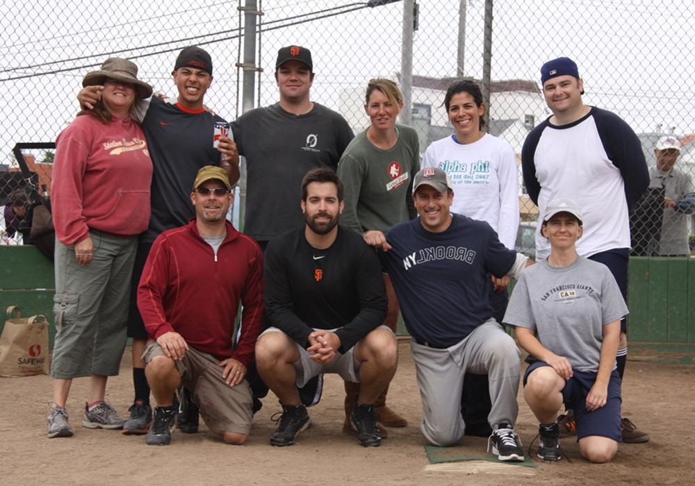
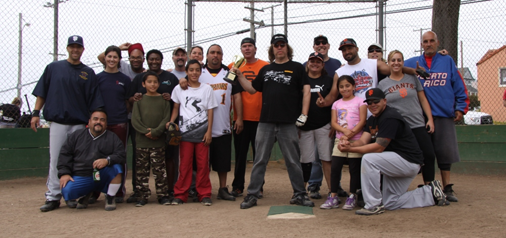
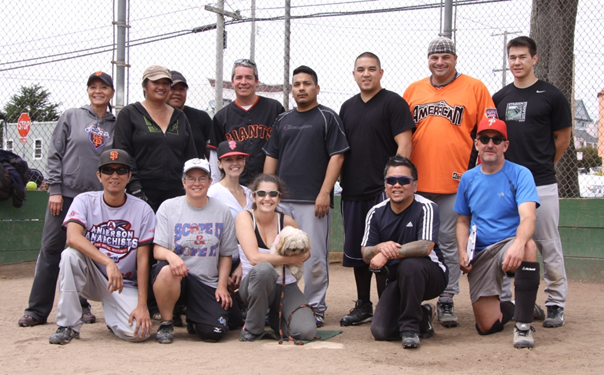
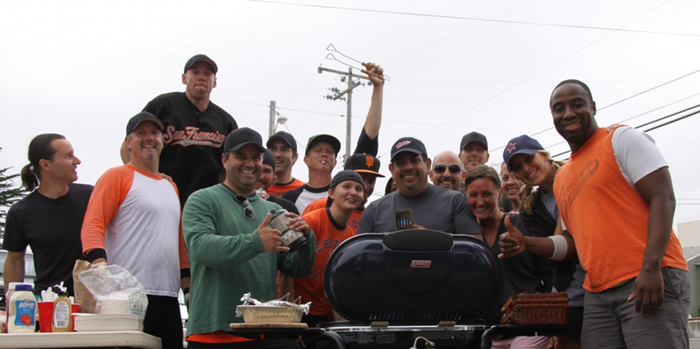
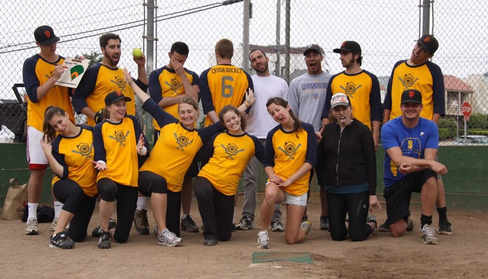
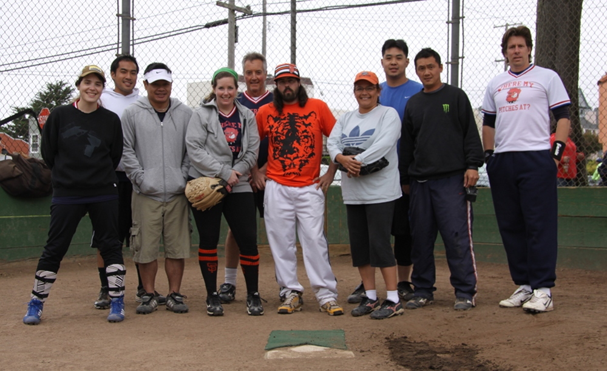
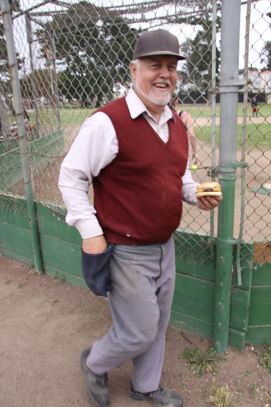

Bay Area Media Softball League
2014 season starts in March. Managers, submit your rosters now!
2014 season starts in March. Managers, submit your rosters now!
Team Bacon

Big Stixxx

The Gophers

High & Outside

Media Alliance

Rocket Fish

SAS

Wheelhouse

Where My Pitches At?

John, The Umpire, and Supreme Ruler of
How High a Ball Can Arc and Still Be Called a Strike
